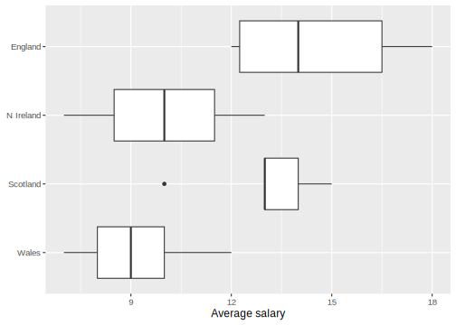

| Nation | Average salaries ('000 £) | Sample size | Sample mean | Sample sd |
|---|---|---|---|---|
| England | 17, 12, 18, 13, 15, 12 | 6 | 14.5 | 2.588 |
| N Ireland | 11, 7, 9, 13 | 4 | 10.0 | 2.582 |
| Scotland | 15, 10, 13, 14, 13 | 5 | 13.0 | 1.871 |
| Wales | 10, 12, 8, 7, 9 | 5 | 9.2 | 1.924 |
5 Analysis of variance
Analysis of variance, shortened as ANOVA or AOV, is a collection of statistical models and estimation procedures for analysing the variation among different groups. In particular, a single-factor ANOVA provides a hypothesis test regarding the equality of two or more population means, thereby generalising the one-sample and two-sample \mathsf{t} tests considered in Section 3.1.3 and Section 4.1.3.
5.1 Single factor ANOVA test
Suppose that we have k normally distributed populations with different means \mu_1, \dots, \mu_k and equal variances \sigma^2. We denote the rv for the jth measurement taken from the ith population by X_{ij} and the corresponding sample observation by x_{ij}. For samples of size m_1, \dots, m_k, we denote the sample means \overline{X}_i = \frac{1}{m_i} \sum_{j=1}^{m_i} X_{ij}\,, and sample variances S_i^2 = \frac{1}{m_i - 1} \sum_{j=1}^{m_i} (X_{ij} - \overline{X}_{i})^2\,, for each i = 1, \dots, k; likewise, we denote the associated point estimates for the sample means \overline{x}_1, \dots, \overline{x}_k and the sample variances s_1^2, \dots, s_k^2. The average over all observations m = \sum m_i, called the grand mean, is denoted by \overline{X} = \frac{1}{m} \sum_{i=1}^k \sum_{j=1}^{m_i} X_{ij}\,. The sample variances s_i^2, and hence the sample standard deviations, will generally vary even when the k populations share the same variance; a rule of thumb is that the equality of variances is reasonable if the largest s_i is not much more than two times the smallest.
Alternative lingo
In the context of ANOVA, these k populations are often referred to as treatment distributions.
We wish to test the equality of the population means, given by the null hypothesis, H_0 : \mu_1 = \mu_2 = \cdots = \mu_k\,, versus the alternative hypothesis, H_a : \text{at least two}\; \mu_i \; \text{differ}\,. Note that if k=3 then H_0 is true only if all three means are the same, i.e., \mu_1 = \mu_1 = \mu_3, but there are a number of ways which the alternative might hold: \mu_1 \neq \mu_2 = \mu_3 or \mu_1 = \mu_2 \neq \mu_3 or \mu_1 = \mu_3 \neq \mu_2 or \mu_1 \neq \mu_2 \neq \mu_3.
The test procedure is based on comparing a measure of the difference in variation among the sample means, i.e., the variation between x_i’s, to a measure of variation within each sample.
Definition 5.1 The mean square for treatments is \mathsf{MSTr} = \frac{1}{k-1} \sum_{i=1}^k m_i (\overline{X}_i - \overline{X})^2\,, and the mean square error is \mathsf{MSE} = \frac{1}{m-k} \sum_{i=1}^k (m_i - 1) S_i^2 \,. The \mathsf{MSTr} and \mathsf{MSE} are statistics that measure the variation among sample means and the variation within samples. We will also use \mathsf{MSTr} and \mathsf{MSE} to denote the calculated values of these statistics.
Proposition 5.1 The test statistic F = \frac{\mathsf{MSTr}}{\mathsf{MSE}} is the appropriate test statistic for the single-factor ANOVA problem involving k populations (or treatments) with a random sample of size m_1, \dots, m_k from each. When H_0 is true, F \sim \mathsf{F}(\nu_1 = k-1, \nu_2 = m - k)\,. In the present context, a large test statistic value is more contradictory to H_0 than a smaller value. Therefore the test is upper-tailed, i.e., consider the area F_\alpha to the right of the critical value F_{\alpha, \nu_1, \nu_2}. We reject H_0 if the value of the test statistic F > F_\alpha.
Note 5.1: Average Salary Data
The Average Salary Data comprises average salaries reported by 20 local councils across the four nations of the United Kingdom (England, N Ireland, Scotland and Wales). The sample means and sample standard deviations are summarised in Table 5.1.
Example 5.1 Consider the Average Salary Data reported in Note 5.1. Is the expected average salary in each nation the same at the 5\% level?
We begin by exploring the data through the generation and interpretation of some box plots. The box plots in Figure 5.1 indicate that there may be a difference in median average salary by nation.

For \alpha = 0.05, we compute the upper-tail area F_{0.05} i.e. to the right of the critical value F_{0.05, 3, 16} by consulting a statistical table or by using R to find F_{0.05} = 3.2388715.
Code
# alt: qf(.05, df1 = 3, df2 = 16, lower.tail = FALSE)
qf(1-.05, df1 = 4-1, df2 = 20-4) [1] 3.238872The grand mean is \overline{x} = \frac{17 + 12 + 18 + \cdots + 8 + 7 + 9}{20} = 11.9\,, and hence the variation among sample means is given by, \begin{aligned} \mathsf{MSTr} &= \frac{1}{4-1} \left(m_1(\overline{x}_1 - \overline{x})^2 + \cdots + m_4 (\overline{x}_4 - \overline{x})^2\right) \\ &= \left(6 (14.5-11.9)^2 + 4(10.0 - 11.9)^2 + 5(13.0-11.9)^2 + 5 ( 9.2 - 11.9)^2\right) / 3 \\ &= 32.5 \,. \end{aligned} The mean square error is \begin{aligned} \mathsf{MSE} & = \frac{1}{20-4} \left((m_1 - 1)s_1^2 + \cdots (m_4-1)s_4^2\right)\\ &= \frac{5(2.588)^2 + 3(2.582)^2 + 4(1.871)^2 + 4(1.924)^2}{16} \\ &= 5.14366 \end{aligned} yielding the test statistic value F = \frac{\mathsf{MSTr}}{\mathsf{MSE}} = \frac{32.5}{5.14366} = 6.3184581 \,. Since F > F_\alpha we reject H_0. The data do not support the hypothesis that the mean salaries in each nation are identical at the 5\% level.
5.2 Confidence intervals
In Section 4.1, we gave a CI for comparing population means involving the difference \mu_X - \mu_Y. In some settings, we would like to give CIs for more complicated functions of population means \mu_i. Let \theta = \sum_{i=1}^k c_i \mu_i\,, for constants c_i. As we assume the X_ij are normally distributed with \mathbf{E}[X_{ij}] = \mu_i and \mathop{\mathrm{Var}}[X_{ij}] = \sigma^2, the estimator \widehat{\theta} = \sum_{i=1}^k c_i \overline{X}_{i}\,, is normally distributed with \mathop{\mathrm{Var}}[\widehat{\theta}] = \sum_{i=1}^k c_i^2 \mathop{\mathrm{Var}}[\overline{X}_i] = \sigma^2 \sum_{i=1}^{k} \frac{c_i^2}{m_i}\,. We estimate \sigma^2 by the \mathsf{MSE} and standardise the estimator to arrive at a \mathsf{t} variable \frac{\widehat{\theta} - \theta}{\widehat{\sigma}_{\widehat{\theta}}}\,, where \widehat{\sigma}_{\widehat{\theta}} is the estimated standard error of the estimator.
Proposition 5.2 A 100(1-\alpha)\% CI for \sum c_i \mu_i is given by \sum_{i=1}^k c_i \overline{x}_i \pm t_{\alpha/2, m-k} \sqrt{\mathsf{MSE} \sum_{i=1}^k \frac{c_i^2}{m_i}}\,.
Example 5.2 Determine a 90\% CI for the difference in mean average salary for councils in Scotland and England, based on the data available in Table 5.1
For \alpha = 0.10, the critical value t_{0.05, 16} = 1.7458837 is found by looking in a table of \mathsf{t} critical values or by using R:
Code
# alt: qt(0.1/2, 16, lower.tail = FALSE)
qt(1-0.1/2, df = 20 - 4) [1] 1.745884Then for the function \overline{x}_2 - \overline{x_1}, \begin{aligned} (\overline{x}_{Eng} - \overline{x}_{Sco}) \pm& t_{0.05, 16} \sqrt{\mathsf{MSE}} \sqrt{\frac{1}{m_{Eng}} + \frac{1}{m_{Sco}}} \\ & = (14.5 - 13.0) \pm 1.7458837 \sqrt{5.14366} \sqrt{\frac{1}{6} + \frac{1}{5}} \\ & = 1.5 \pm 2.3976575\,. \end{aligned} Thus, a 90\% confidence interval for \mu_{Eng} - \mu_{Sco} is (-0.8977\,, 3.898).
Consider the following
How does the result in Example 5.2 compare to the \mathsf{t} method in Section 4.1.3?